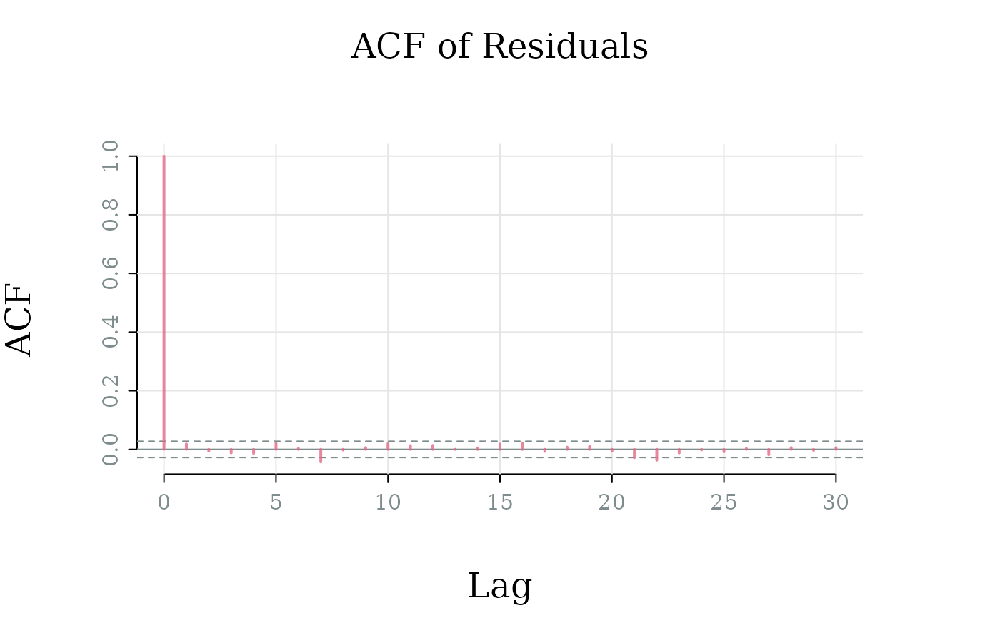

Assess remaining autocorrelation in the residuals of the fitted model by plotting the autocorrelation function (ACF). Ideally, there should be no significant autocorrelation remaining, indicating that the model has adequately captured the temporal dependencies in the data.
Usage
ou_plot_fit_acf(
fit,
lag.max = 30,
palette = "Temps",
main = "ACF of Residuals",
xlab = "Lag",
ylab = "ACF",
alpha = 0.8,
...
)Arguments
- fit
A
fit_affectOUobject- lag.max
Maximum lag to compute. Specified in terms of saved time points. For example,
lag.max = 10corresponds to 10 time units and 100 lags withsave_at = 0.1.- palette
Color palette. Should be one
grDevices::hcl.pals().- main
Main title
- xlab
X-axis label
- ylab
Y-axis label
- alpha
Alpha transparency for colors (0 = transparent, 1 = opaque)
- ...
Additional graphical parameters
Examples
model <- affectOU(theta = 0.5, mu = 0, gamma = 1)
sim <- simulate(model, stop = 500, dt = 0.01, save_at = 0.1)
data <- as.data.frame(sim)
fitted <- fit(model, data = data$value, times = data$time)
ou_plot_fit_acf(fitted)
